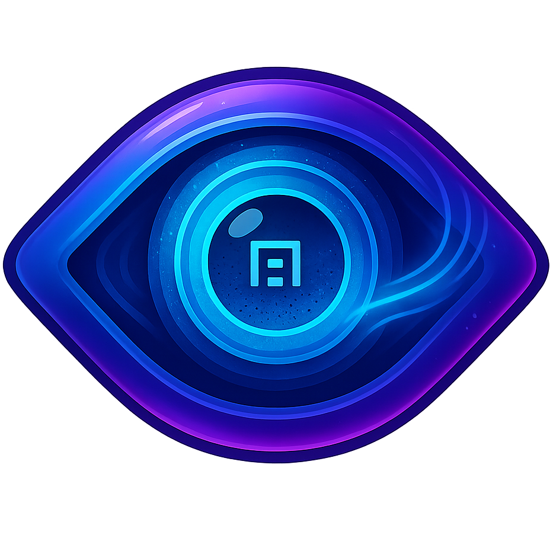

Apochron decodes autostereograms back into depth maps. Here's how to get the best results:
Min Pattern Width: Controls detection of nearby (close) depth levels
Max Pattern Width: Controls detection of distant (far) depth levels
Range too wide: If max - min is too large (> 60), depth levels wash out or muted and blend together. Keep them reasonably close for greatest contrast!
Occlusion Passes: Number of times to clean up vertical edges
Cleanup Window Size: How many neighboring pixels to consider
Depth map looks washed out:
Nearby levels corrupted:
Background and far levels corrupted:
Vertical edges are noisy:
1. Load an autostereogram image
2. Click "Decode Depth Map" with default settings
3. If nearby levels look bad → lower Min Pattern Width
4. If far levels look bad → raise Max Pattern Width
5. If edges are noisy → increase Occlusion Passes
6. Download your depth map when satisfied!
Pro Tip: Most autostereograms use pattern widths between 47-97 pixels. Start there and adjust based on what you see!